Pauwels classification of femoral neck fractures, a guided walkthrough
Step 1 · The patient
The registrar says: "Young patient, steep line, that's a Pauwels III. He needs reduction and a fixed-angle implant today, and he's at risk of his femoral head dying."
By the end of this page you will understand every word of that sentence: why a young patient, why the angle of the line matters so much, why the leg lies short and turned out, why the surgeon chooses a particular implant, and why the femoral head may lose its blood supply.
Step 2 · The bone: proximal femur, piece by piece
The proximal femur is the upper end of the thigh bone. From inside the joint outward:
- Femoral head: about two-thirds of a sphere, covered by joint (hyaline) cartilage everywhere except a small pit, the fovea capitis, where the ligament of the head attaches.
- Femoral neck: the narrow bridge that carries the head away from the shaft. It lets the leg swing widely without the shaft hitting the pelvis, but it is also the mechanically weak link, because all body weight is passed through a thin, angled strut.
- Greater trochanter: the large bump on the outer (lateral) side, which you can feel under the skin at the side of the hip. Many hip muscles insert here.
- Lesser trochanter: the smaller bump on the inner, back (posteromedial) side, below the neck. The iliopsoas tendon inserts here.
- Intertrochanteric line (front) and intertrochanteric crest (back): the ridges joining the two trochanters. They matter because the joint capsule attaches near them (Step 4).
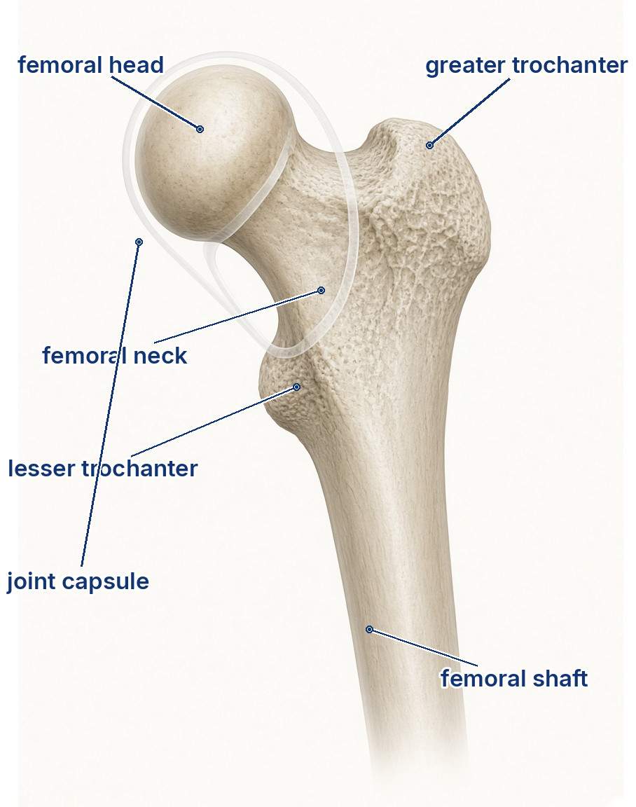
Image check: the labels sit on the correct structures; the capsule is drawn as a simplified outline around head and neck.
Fractures are named by where they are: head (Pipkin), neck (Garden, Pauwels), intertrochanteric (between the trochanters), subtrochanteric (just below the lesser trochanter).
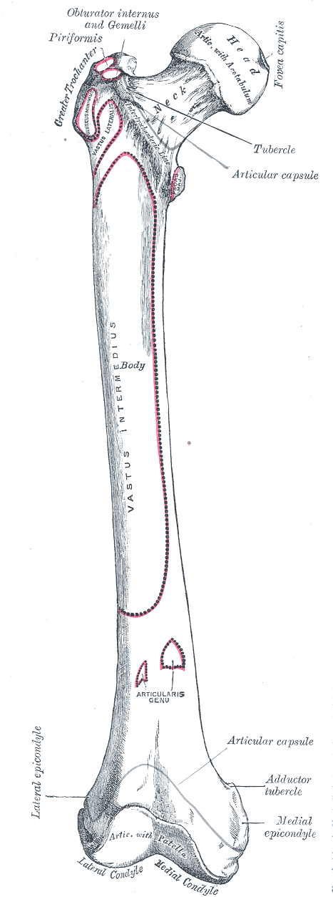

Gray's classic plate shows the real shape: note how the neck leaves the shaft at an angle and is twisted slightly forward. The red outlines are the original muscle-attachment areas from the plate.
Two angles you must know
- Neck-shaft angle (inclination angle): the angle between the neck axis and the shaft axis, seen from the front. In adults it is roughly 125° to 135° (standard anatomy texts; it is wider in children and decreases with age). A smaller angle is called coxa vara, a larger one coxa valga.
- Anteversion: seen from above, the neck points slightly forward relative to the line through the knee condyles; in adults typically about 10° to 15°.
Step 3 · Inside the bone: trabeculae, Ward's triangle and the calcar
The neck is not solid. Inside the thin outer shell (cortex) is spongy (cancellous) bone made of tiny struts called trabeculae. They are not random: they line up along the lines of force (Wolff's law: bone remodels in response to the loads it carries).
- Principal compressive group: thick struts that run from the inner (medial) cortex of the neck straight up into the top of the head. They carry body weight in compression.
- Principal tensile group: an arch from the outer (lateral) cortex below the greater trochanter, curving over the top of the neck into the lower part of the head. It resists the bending of the neck (the top of the neck is stretched when you stand).
- Secondary compressive and tensile groups and the greater trochanter group: thinner fans of struts.
- Ward's triangle: the area in the neck between these groups where there are few trabeculae. It is a natural weak spot, and in osteoporosis it empties first.
- Calcar femorale: strictly, a vertical plate of dense bone inside the femur that runs from the back-inner (posteromedial) cortex near the lesser trochanter up into the neck. Surgeons also use "calcar" loosely for the thick inner (medial) cortex of the neck. It is the main pillar that carries load; when it is crushed or broken, a fracture is less stable.
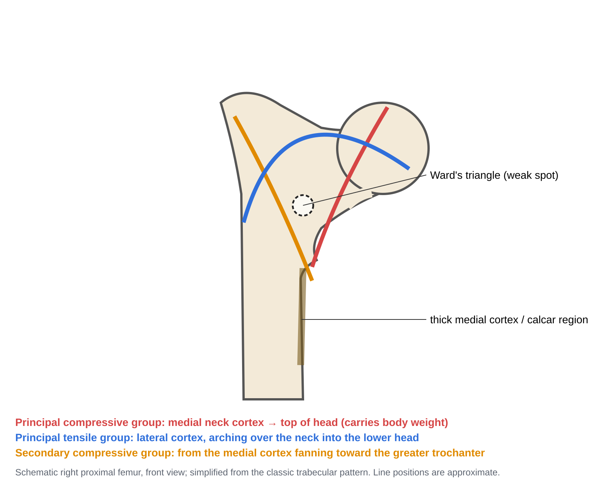
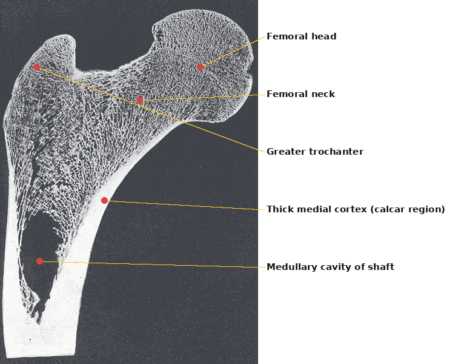

Step 4 · The hip joint: capsule, ligaments and why "intracapsular" matters
The hip is a ball-and-socket (spheroidal) synovial joint between the femoral head and the acetabulum (the socket of the pelvis). The socket is deepened by a ring of fibrocartilage, the acetabular labrum, and its gap at the bottom is bridged by the transverse acetabular ligament.
The capsule: where it attaches
- On the pelvis it attaches around the rim of the acetabulum, just outside the labrum.
- On the femur, at the front it attaches all the way down to the intertrochanteric line, so the whole front of the neck is inside the joint.
- At the back it attaches only about halfway along the neck, above the intertrochanteric crest, so the outer part of the back of the neck lies outside the capsule.
The ligaments: thickenings of the capsule
| Ligament | From → to | What it does |
|---|---|---|
| Iliofemoral (Y-ligament of Bigelow) | Anterior inferior iliac spine and acetabular rim → intertrochanteric line (front) | The strongest ligament of the body. Tight in extension, so it lets you stand upright "hanging" on it with little muscle work. Also limits external rotation. |
| Pubofemoral | Superior pubic ramus → lower front of the capsule / neck | Limits abduction and extension. |
| Ischiofemoral | Ischium, behind the acetabulum → spirals up and out to the back of the neck near the greater trochanter | Limits internal rotation and extension. |
| Zona orbicularis | Circular fibres around the neck | A collar that holds the head in the socket. |
| Ligament of the head of the femur (ligamentum teres) | Acetabular notch / transverse ligament → fovea capitis | Weak mechanically; carries a small artery (Step 5). Inside the joint but outside the synovial cavity (wrapped in synovium). |


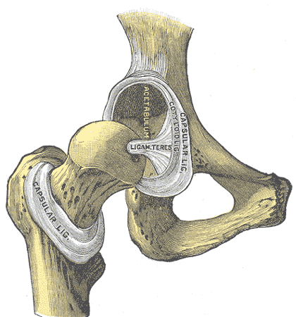

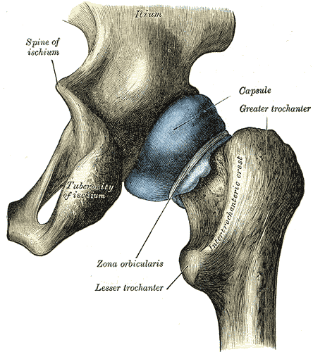

Compare front and back: at the front (Gray 340) the capsule reaches the intertrochanteric line; at the back (Gray 343) part of the neck is visible outside the capsule. This is the anatomical basis of the words "intracapsular" and "extracapsular".
Step 5 · The blood supply of the femoral head and why it dies
This is the single most important piece of anatomy for femoral neck fractures. In adults the head gets its blood from three sources:
- The circumflex femoral arteries (main supply). The medial and lateral circumflex femoral arteries usually arise from the deep femoral artery (profunda femoris). They form a ring of vessels around the base of the neck (extracapsular arterial ring). From that ring, retinacular arteries (also called ascending cervical arteries) climb up along the surface of the neck, under folds of synovium (the retinacula), and enter the head just below the cartilage edge. The deep branch of the medial circumflex femoral artery, running behind the neck, supplies the posterosuperior retinacular vessels, which provide most of the blood to the weight-bearing head.
- Inside the bone from the shaft (medullary/nutrient vessels): a small contribution, and it is cut by any complete neck fracture.
- The artery of the ligament of the head (artery of the ligamentum teres), usually from the obturator artery: important in children, but in most adults it supplies only a small area near the fovea.
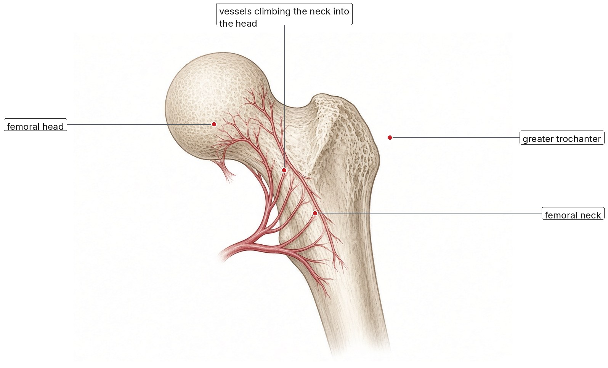
Image check: correct principle (vessels from the base of the neck running up along the neck surface to the head). Simplified: it does not show which vessels run in front and which behind, and it does not show the artery of the ligament of the head.
Step 6 · Muscles, tendons and insertions: what pulls on the pieces
Once the neck is broken, the head stays in the socket (held by the capsule and the ligament of the head), and the shaft with both trochanters becomes a separate piece that the muscles can pull on freely. To understand the classic leg position, follow each muscle to its insertion:
| Muscle (nerve) | Origin → insertion | Normal action | Effect after a neck fracture |
|---|---|---|---|
| Gluteus medius and gluteus minimus (superior gluteal nerve) | Outer surface of the ilium → greater trochanter (medius: lateral surface; minimus: front surface) | Abduction; keep the pelvis level when you stand on one leg (failure = Trendelenburg sign); front fibres rotate inward. | Pull the trochanter, and with it the shaft, upward → shortening. |
| Iliopsoas (femoral nerve, lumbar plexus) | Lumbar spine (psoas) and iliac fossa (iliacus) → lesser trochanter | Strongest hip flexor. | Pulls the shaft up; because the lesser trochanter lies at the back-inner side, it also helps turn the shaft outward. |
| Short external rotators: piriformis, obturator internus with superior and inferior gemelli, obturator externus, quadratus femoris (sacral plexus nerves; obturator externus = obturator nerve) | Sacrum / around the obturator foramen / ischium → greater trochanter (piriformis: top; obturator internus + gemelli: inner surface), trochanteric fossa (obturator externus), quadrate tubercle on the intertrochanteric crest (quadratus femoris) | Turn the thigh outward; press the head into the socket. | With nothing to resist them, they turn the shaft outward → external rotation. |
| Gluteus maximus (inferior gluteal nerve) | Ilium, sacrum → gluteal tuberosity and iliotibial tract | Extension and external rotation. | Adds external rotation and upward pull. |
| Adductors: longus, brevis, magnus (obturator nerve; part of magnus by the sciatic nerve) | Pubis and ischium → linea aspera on the back of the shaft (magnus also to the adductor tubercle) | Pull the thigh inward. | Pull the shaft up and inward → shortening, and contribute to a varus (head tilted down) position. |
| Muscles crossing to the knee: rectus femoris, hamstrings, sartorius | Pelvis → tibia / fibula | Hip and knee movement. | Pull the whole leg up → shortening. |
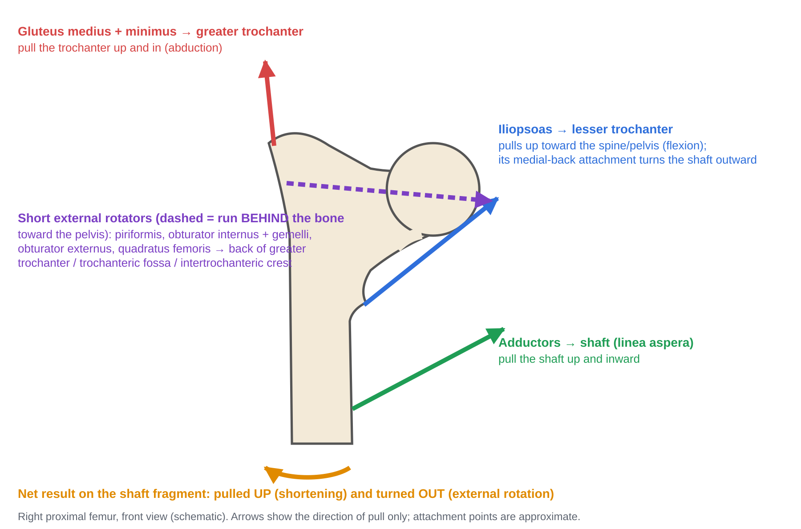
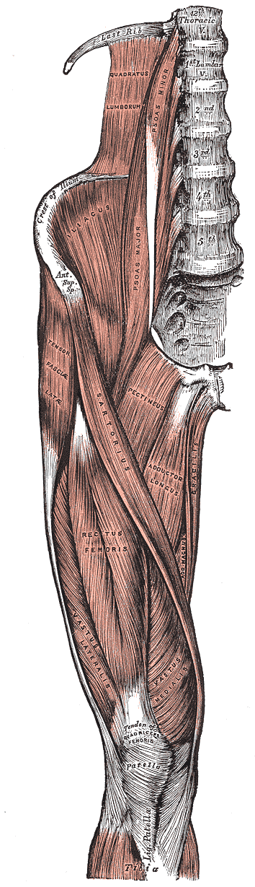

Step 7 · The idea of Pauwels: compression versus shear
Friedrich Pauwels, a German orthopaedic surgeon, described this classification in 1935. His key insight was mechanical: the same body weight acts very differently on a fracture depending on the angle of the fracture line.
- Compression (squeezing) acts across the fracture line and presses the two surfaces together. Moderate compression is good for healing: the pieces are held still and in contact.
- Shear (sliding) acts along the fracture line and makes the pieces slide past each other. Shear is bad: the head slides down and tips into varus, the shaft moves up, the fracture gap opens, screws can bend or cut out, and the blood vessels are injured again.
If we treat the load through the hip as roughly vertical (simplified), simple trigonometry tells us how it splits: the part pressing across the line is proportional to the cosine of the angle, the part sliding along the line to the sine. So the steeper the line, the more of the load becomes shear.
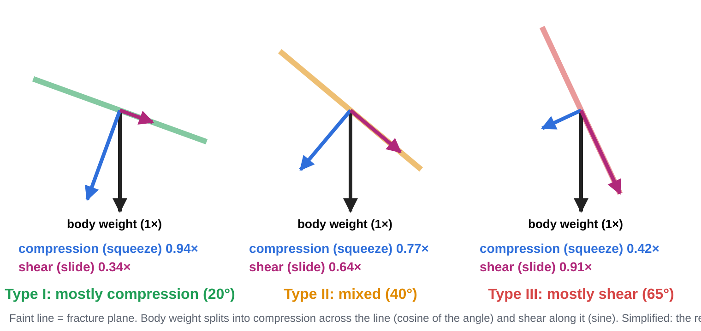
Step 8 · The three Pauwels types
Draw a horizontal line (in practice: perpendicular to the long axis of the shaft, or parallel to a line through both hips) on the AP X-ray, then measure the angle between it and the fracture line. The lecture (slide 13) uses these limits:
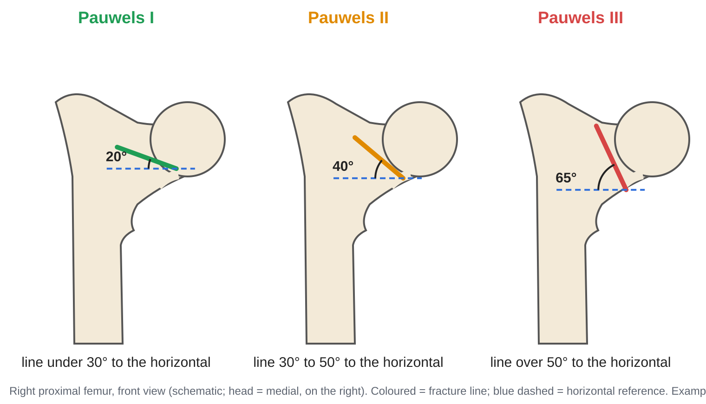
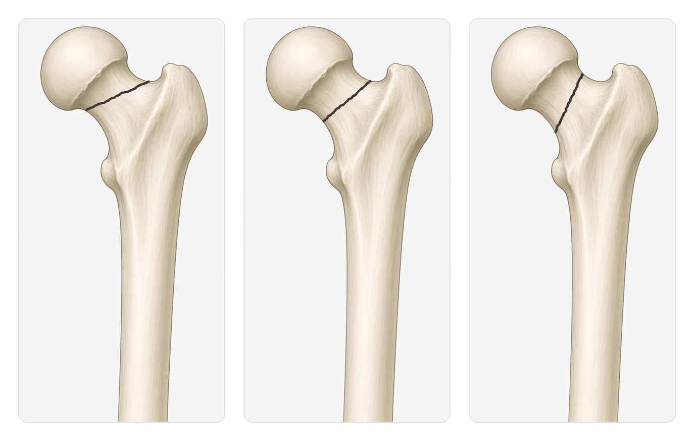
Pauwels I: under 30°
What you see: a nearly horizontal line across the neck. Often the head is pushed into a valgus (tilted up) and impacted position: the pieces are wedged into each other.
Forces: mostly compression: body weight presses the fragments together. The fracture is relatively stable.
- Who: usually an older person after a simple fall from standing (low energy).
- Symptoms: pain in the groin or sometimes referred to the knee (the obturator and femoral nerves supply both hip and knee); some patients can still walk with a limp.
- Bedside: the leg may look normal or only slightly externally rotated, because the impacted pieces are locked together; tenderness in the groin; pain when the leg is gently rolled (pin-rolling test).
- Why: compression keeps the pieces locked, so the muscles cannot pull the shaft up and out. The danger is that a missed fracture displaces later, so take groin pain after a fall seriously and image it (MRI if X-ray is normal).
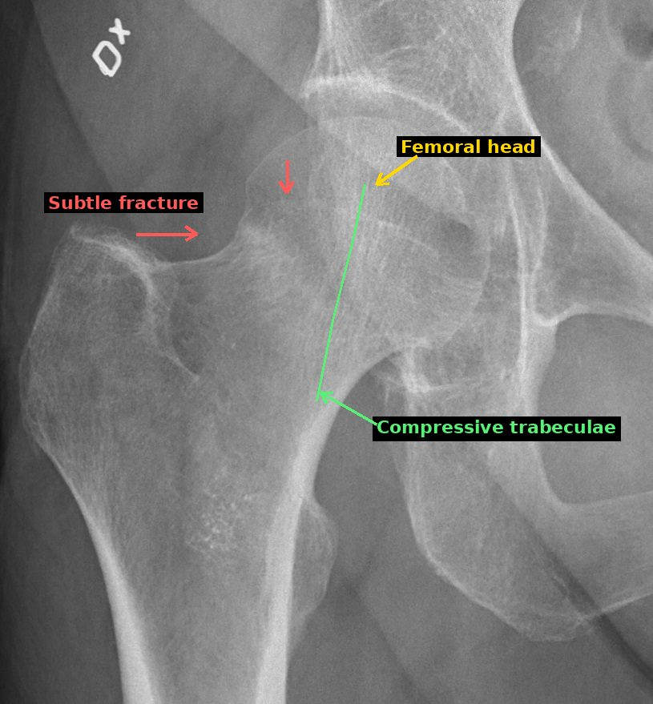

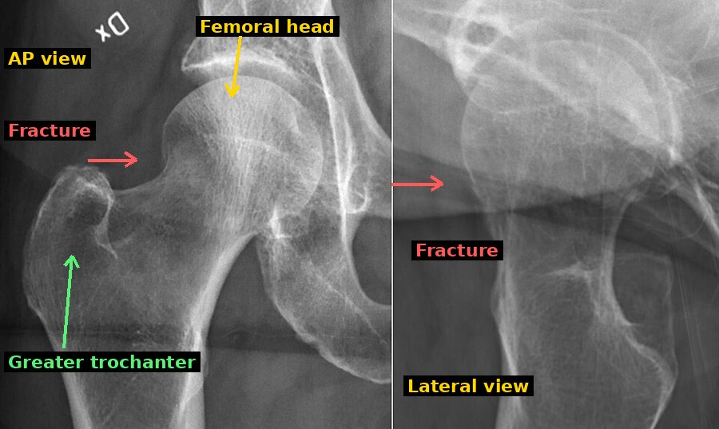

Pauwels II: 30° to 50°
What you see: a moderately oblique line.
Forces: a mix: compression still exceeds shear, but shear is now significant. McRae notes that most fragility fractures are type 2.
- Who: typically an older patient after a fall.
- Symptoms and signs: depend mainly on displacement (Garden), not on the angle: if undisplaced, the leg may look nearly normal; if displaced, it is shortened and externally rotated, the patient cannot stand or do a straight-leg raise, groin tenderness, painful rotation (lecture slide 12).
- Why: once displaced, the shaft is free and the muscles pull it up and out (Step 6).
Pauwels III: over 50°
What you see: a steep, nearly vertical line, often from the top of the neck down toward the inner (medial) side, frequently with a small broken-off piece at the back-inner (posteromedial) side (comminution) that removes the calcar support.
Forces: mostly shear: the head tends to slide down and into varus, the shaft up. This is the least stable type, with the highest risk of displacement, failure of fixation and nonunion.
- Who: typically a young adult after high-energy trauma (motorbike or car crash, fall from height), often with an axial force up the leg with the hip abducted (McRae: young patients after higher-energy trauma "often have a more vertical, Pauwels 3, orientation").
- Symptoms: severe hip and groin pain; cannot stand or walk.
- Bedside: usually displaced, so the leg is clearly shortened and externally rotated; cannot lift the straight leg; any rotation is very painful. There may be little bruising because the bleeding stays in the capsule.
- Look for other injuries: high energy means trauma assessment of the whole patient (airway, breathing, circulation first), and check the same leg for a femoral shaft fracture; the lecture notes an additional femoral neck fracture in some shaft fractures (slide 55, 1 to 9%) and the neck fracture can be missed.
- Why: the shear force from the injury and from muscle pull drives the pieces apart, so the deformity appears early and is marked.
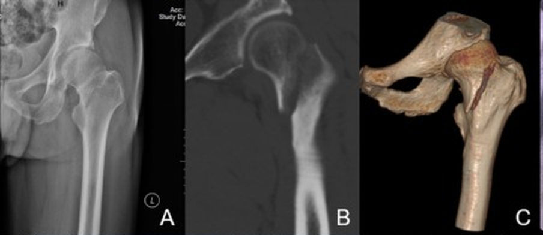
What to notice: on the CT slice (B) the line through the neck is steep, far from horizontal. That is the point of a CT in young patients: it shows the true angle and any posteromedial comminution, which the plain film can hide (the leg is often rolled outward, which distorts the neck on an AP view).
I do not draw an angle on these small images; the authors measured the type.
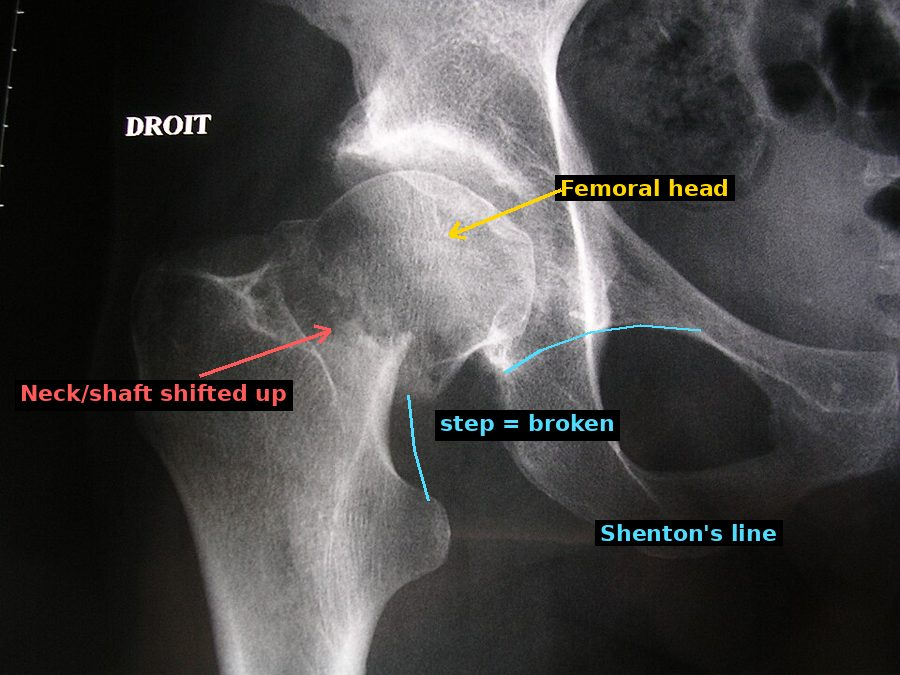

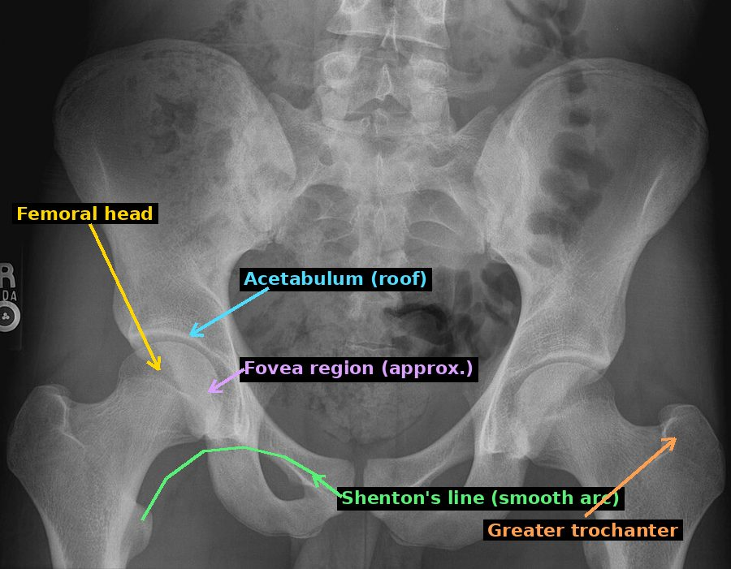

Step 9 · Pauwels and Garden together
The two classifications answer different questions, so surgeons use both:
| Garden | Pauwels | |
|---|---|---|
| Question | How far has the head moved (displacement)? | Which way does the fracture line run (angle)? |
| Types | I incomplete/valgus impacted, II complete undisplaced, III partly displaced, IV fully displaced | I <30°, II 30–50°, III >50° |
| Best predicts | Damage to the retinacular vessels → osteonecrosis; in the elderly, choice between fixation and replacement | Mechanical stability → risk of re-displacement, fixation failure, nonunion; choice of implant in the young |
| Reliability | In practice simplified to "undisplaced (I–II)" vs "displaced (III–IV)" (McRae) | The angle is hard to measure exactly on plain film because of rotation; CT helps |
Example: Lukas has a Garden IV (fully displaced) and Pauwels III (vertical) fracture: displaced (vessels at risk) and shear-unstable (fixation must resist sliding).
Step 10 · Imaging: how to see the angle
- AP pelvis and AP of the hip: compare both sides; check Shenton's line, the trabecular lines, the cortex of the neck. Ideally the leg is gently rotated inward about 15° so the neck lies flat to the film (it hides behind the trochanter when the leg is rolled out). Do this only if it is not too painful.
- Lateral view (for example a cross-table lateral): shows posterior tilt and comminution that the AP view misses.
- CT: in young patients and complex fractures, shows the true fracture angle, posterior comminution and planning details.
- MRI: for occult fractures, when the X-ray is normal but the patient cannot bear weight (lecture slide 16).
Step 11 · Treatment: how the type changes the operation
General principles (lecture slide 18)
- Closed reduction and internal fixation with cannulated screws, a dynamic (sliding) hip screw, or (sometimes) a proximal femoral nail.
- Prosthetic replacement in the elderly (lecture: over 70 years, displaced or undisplaced): hemiarthroplasty (bipolar) for patients who are not very mobile; total hip arthroplasty for healthy, independent, mobile patients.
- If a displaced (Garden III/IV) fracture cannot be reduced closed in a patient under 60: open reduction through an anterior or anterolateral approach.
Why Pauwels decides the implant in young patients
In young patients the aim is to save the patient's own head, because a hip replacement has a limited lifespan. The fracture must be reduced perfectly and held against the forces that act on it:
- Pauwels I and II: the forces are mostly compression. Three parallel cannulated screws (usually in an inverted triangle, with the lower screw resting on the calcar) act as lag screws and let the fracture compress further as the patient loads it. McRae: type 1 and 2 "can be fixed with screws".
- Pauwels III: shear makes parallel screws tend to slide, so the head drops into varus and the neck shortens. A fixed-angle (angle-stable) implant resists this better: a dynamic (sliding) hip screw with an extra anti-rotation screw (McRae), or newer fixed-angle neck devices (for example the femoral neck system). Some surgeons add a small medial buttress plate. Which is best is still being studied.
- Timing: surgeons try to reduce and fix these fractures urgently to protect the blood supply; McRae notes that within 24 hours is intuitive but not proven.
- Screw position matters: the lecture's tip-apex distance (slide 20) should be under 25 mm for a sliding hip screw to reduce cut-out.
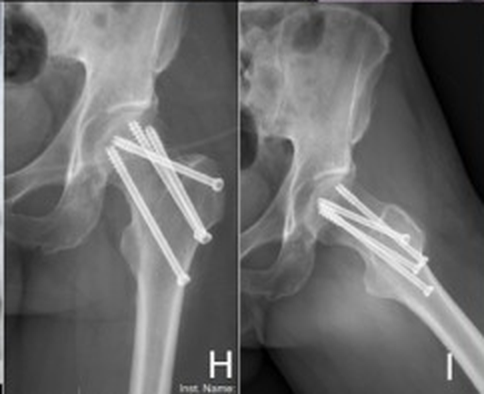
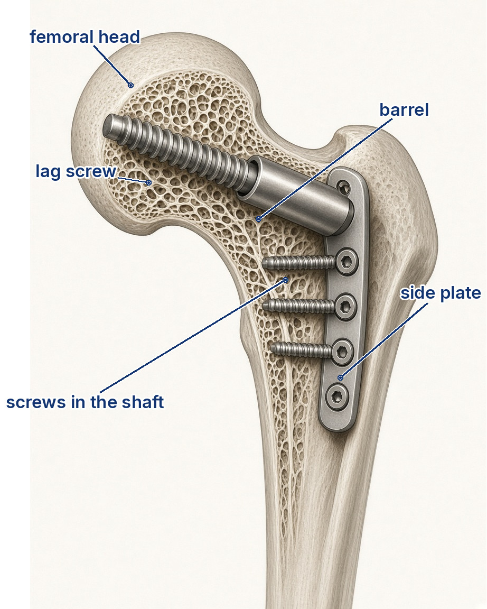
Step 12 · Complications and why they happen
| Complication (lecture slide 21) | Why it happens | Link to Pauwels |
|---|---|---|
| Osteonecrosis of the head | Retinacular vessels torn by displacement | More linked to displacement (Garden); re-displacement after failed fixation adds damage |
| Malreduction | Imperfect reduction (varus, rotation, shortening) | Malreduced steep fractures fail more easily |
| Secondary displacement | Fixation loses hold under load | Shear in type III |
| Nonunion | Movement at the fracture, synovial fluid, poor blood supply | Highest in type III (shear) |
| Cut-out | Screw migrates out of the head into the joint | Varus collapse, poor screw position, osteoporotic bone |
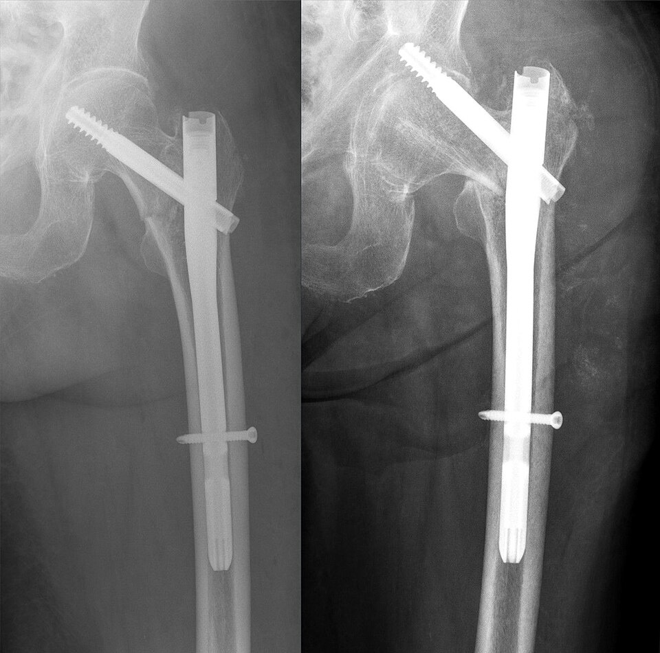

What to notice: compare the screw tip position right after surgery with two months later: the head has tilted and the screw has migrated through it into the socket.
Step 13 · Summary on one screen
| Type | Angle | Main force | Typical patient | Leg | Fixation idea (young) |
|---|---|---|---|---|---|
| I | <30° | Compression | Older, low fall; often valgus impacted | May look normal | Cannulated screws |
| II | 30–50° | Mixed | Older, fall (most common fragility type) | Short + external rotation if displaced | Cannulated screws |
| III | >50° | Shear | Young, high energy | Usually short + external rotation | Fixed-angle device (sliding hip screw + anti-rotation screw) |
Optional practice (with worked answers)
Sources
- Pauwels F. Der Schenkelhalsbruch: ein mechanisches Problem. Stuttgart: Enke; 1935 (original classification).
- UMCH Hamburg, Lecture 7 "Injuries of the hip + femur" (slides 11 to 21).
- McRae's Orthopaedic Trauma and Emergency Fracture Management, 4th ed., Elsevier, Chapter 17 (Hip).
- AO Surgery Reference, proximal femur: surgeryreference.aofoundation.org.
- Gray H. Anatomy of the Human Body, 1918 (public domain plates via Wikimedia Commons).
- Li et al., Orthop Surg 2026, PMC13398674 (CC BY 4.0), images of a Pauwels III case.